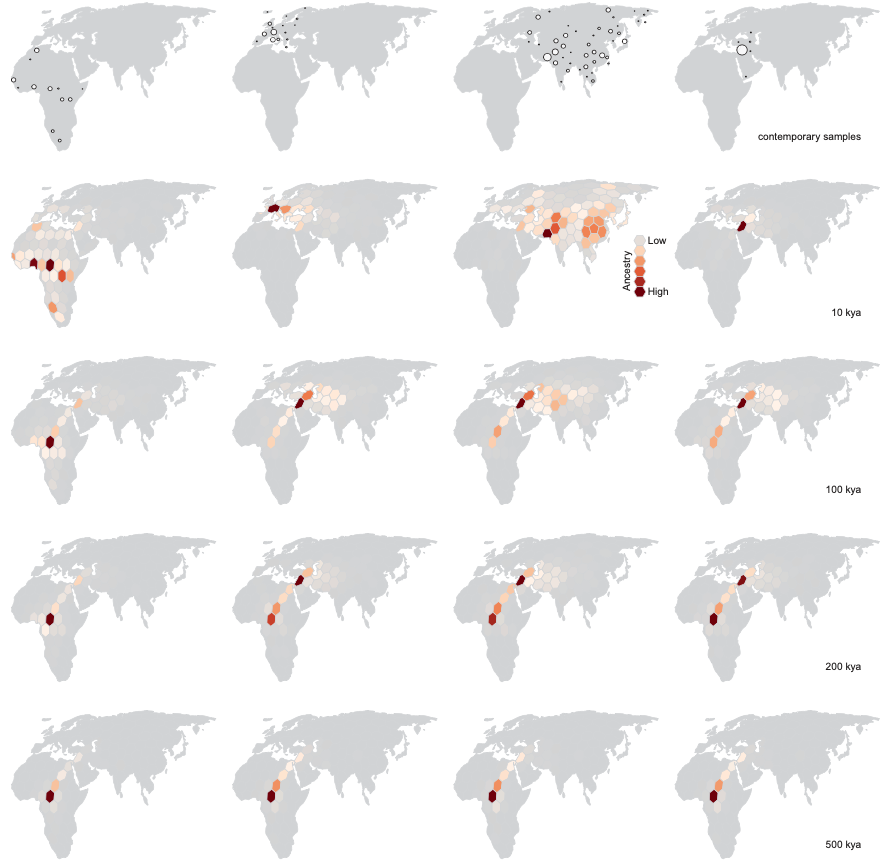

Genetic relatedness describes how recently two sequences shared a common ancestor. Given this, the locations of the individuals, and a model of movement, we can then say something about how quickly their ancestors moved since diverging and where their common ancestor was. Doing this across the genome for many samples gives a lot of information about dispersal rates and the locations of genetic ancestors, allowing us to reconstruct the spatial history of a sample from genomic data.
The ultimate description of genetic relatedness is the ancestral recombination graph (ARG), which contains the coalescent tree at every site in the genome as well as how those trees are weaved together by recombination events (Wong et al 2024). Now that we can infer ARGs we can model movement on them, providing a direct way to do spatial inference while using a ton of data. Correspondingly, a number of methods now do this (Wohns et al 2022, Grundler et al 2025, Osmond & Coop 2024).
Wohns et al 2022 developed a method to date nodes in a (succinct) tskit tree sequence (Kelleher et al 2019) and then inferred a massive ARG composed of both modern and ancient human genomes (1000 Genomes Project, Human Genome Diversity Project, the Simons Genome Diversity Project, 4 ancient humans, 3 Neanderthals, 1 Denisovan). To demonstrate a use-case for a dated-ARG they then applied a simple heuristic spatial inference method -- placing a node in the ARG at the mean location of its child nodes, ignoring branch lengths -- to chromosome 20 (dropping the 1000 Genomes Project samples because they have coarse location data). To account for the earth's curvature they took averages in Cartesian space. Grundler et al 2025 later developed a more sophisticated inference method, placing nodes where they minimize migration cost functions averaged over trees, and applied it to chromosome 18 of the Wohns et al 2022 ARG, keeping only the Human Genome Diversity Project samples. For computational reasons they divided continuous geographic space into many small grids and then, for biological realism, only placed grids on land, preventing dispersal over large water bodies. Osmond & Coop 2024 took an approach of intermediate complexity, applying the tractable model of Brownian motion to many trees across the ARG to locate ancestors at each via maximum likelihood. Their method also takes into account uncertainty in the inferred ARG by re-sampling trees (more specifically, branch lengths) and weighting each tree by its relative likelihood under the spatial model. Unlike the other two methods, the method of Osmond & Coop 2024 uses ARGs inferred by Relate (Speidel et al 2019) and was demonstrated on Arabidopsis thaliana.
It is not clear how the three methods compare, particularly how the method of Osmond & Coop 2024 compares to the other two since it was applied to Arabidopsis rather than humans. To bridge this gap we now apply the method of Osmond & Coop 2024 to humans and compare to the results of Wohns et al 2022 and Grundler et al 2025.
The Relate-inferred ARG for the Simons Genome Diversity Project was kindly shared by Leo Speidel (Speidel et al 2021), containing 278 individuals. To reduce computation time we consider only chromosome 18, use every 1000th tree (for a total of 42), and sample branch lengths at each tree 100 times. The software of Osmond & Coop 2024, spacetrees (https://github.com/osmond-lab/spacetrees), was used to estimate the dispersal rate and locate genetic ancestors. Code available at https://github.com/osmond-lab/spacetrees-sgdp.
We first compare to Figure 4b in Wohns et al 2022 (fig 1). They show the mean ancestor location of each Human Genome Diversity Project population over time, converging in northeast Africa. We compare this to the mean ancestor location of each sample in our ARG over time. One key difference is that we work in latitude and longitude rather than Cartesian coordinates, creating trajectories that are less arced. However, despite a different coordinate system, sample, chromosome, and ARG-inference method, the two spatial-inference methods give similar qualitative results -- the non-African sample lineages converging in the middle east and then all lineages meeting in (north)eastern Africa. Our method also shows more variance in mean ancestor location ~1 million years ago, perhaps because we use do not always find the true maximum likelihood ancestor location when the likelihood surface gets very flat, introducing some noise, or because Wohns et al 2022 also average over population. One of the most unrealistic patterns in these plots is the eastward movement of the North American sample lineages back to Eurasia over the Atlantic -- see appendix for ways to avoid this. Fig 1: (top) Fig 4b from Wohns et al 2022. (bottom) Our version. (todo: run our method on cartesian coordinates for closer comparison, requires extending method to 3d, or at least plot lines as great circles)
We next compare to Figure 4c in Wohns et al 2022 (fig 2). They show the density of ancestor locations from the Human Genome Diversity Project samples at six time points. We show the density of ancestor locations from our sample at roughly similar time points. As in the previous figure, the results are qualitatively similar. Perhaps the most apparent difference is the relative abundance of points in the Wohns et al 2022 figure, as they locate ancestors across an entire chromosome while we restrict ourselves to just 42 sparsely-sampled trees. There is also a more fundamental difference; they locate all lineages at a given time while we locate the ancestors of all samples at a given time, meaning that we locate the same lineage multiple times if some lineages have coalesced, increasing the density at that point. Fig 2. (top) Fig 4c from Wohns et al 2022. (bottom) Our version. (todo: cartesian coordinates)
Finally, we compare to the supplementary video of Wohns et al 2022 (fig 3), which shows the inferred ancestor locations for all samples backwards in time. The dynamics are qualitatively similar.
Fig 3. (top) Supplemental video from Wohns et al 2022. (bottom) Our version. (todo: cartesian coordinates, interpolate along great circles for more frames)
Moving on to Grundler et al 2025, we first compare to their Figure 2 (fig 4), which shows the locations of ancestors of particular samples back in time, as well as the mean ancestor trajectory. To facilitate comparison we focus on two samples that are shared between the datasets, one from Thailand and one from Finland (thanks to Mike Grundler for these ids). The shapes of the mean trajectories are largely the same, the main difference being that our prediction has the ancestors crossing into Africa further south, at the southern end of the Red Sea, whereas by preventing lineages from crossing large water bodies Grundler et al 2025 have the lineages entering Africa further north. This may also be why the oldest mean ancestors also remain further north in their method. Further, while the mean ancestors move at roughly the same rate in the two methods, we have many fewer lineages remaining outide of Africa ~500 thousand years ago. The reason for this remains unclear to us. Fig 4. (top) Two panels from Figure 2 in Grundler et al 2025. (bottom) Our version. (todo: great circles, finer time resolution)
Finally, we compare to Figure 4 in Grundler et al 2025 (fig 5), which shows histograms of ancestor locations for particular groups of samples over time. Again the results are qualitatively similar with the largest differences driven by how far north the lineages outside Africa enter the continent going back in time and how many lineages remain outside of Africa ~200-500 thousand years ago.  Fig 5. (top) Figure 4 in Grundler et al 2025. (bottom) Our version.
Ancestral recombination graphs allow for new methods of spatial inference. Here we compare the method of Osmond & Coop 2024 to Wohns et al 2022 and Grundler et al 2025 using humans sampled from across planet Earth. Despite different coordinate systems, sample sets, chromosomes, and ARG-inference methods, the results are qualitatively quite similar. The largest differences appear to be driven by 1) the Cartesian coordinate system used by Wohns et al 2022 and 2) the restriction against crossing water assumed by Grundler et al 2025. Which method to use therefore depends on what you want to do. The simple and efficient method of Wohns et al 2022 will scale to larger samples. The methods of Wohns et al 2022 and Grundler et al 2025 use every tree in the tree sequence, which may be helpful for smaller ARGs. The method of Osmond & Coop 2024 integrates over uncertainty in the trees, so may be more appropriate for lower quality sequence data. The method of Osmond & Coop 2024 can also calculate the uncertainty in ancestor locations, which may be used for hypothesis testing.
One next step would be a more quantitative comparison of spatial inference method, e.g., applying all three methods to the same ARG and measuring distances between inferred ancestor locations (and perhaps also against true ancestor locations from simulations). Alternatively, one could do a more quantitative comparison of ARG-inference method on spatial inference, e.g., applying the same spatial-inference method to ARGs from tsinfer+tsdate, Relate, SINGER, ARGweaver, etc.
The reason our plots above show the North American sample lineages crossing back to Eurasia over the Atlantic (fig 1-3) is only because of where zero longitude is. If we shift all longitudes so that zero longitude is now in the Pacific and then run our method, we see the North American sample lineages crossing back to Eurasia over the Pacific (fig A1). Working in other projections may create even more realistic visualizations. Fig A1. Our version of Figure 4b in Wohns et al 2022, with zero longitude shifted into the Pacific.
Thanks to Leo Speidel for the tree sequences, Mike Grundler for the sample ids, the Centre for Global Change Studies (University of Toronto) and NSERC (Canada) for funding, and Graham Coop for the ideas behind Osmond & Coop 2024.